This notebook is a ~1 hour tutorial on fitting models to data, starting with a linear model and progressing to a linear model with an extra nonlinear parameter (an unknown extra variance to account for unknown error bars or intrinsic scatter).
This notebook is heavily inspired by Hogg et al. 2010, @jakevdp’s notes, and parts of the emcee documentation.
Python imports we’ll need later…
from IPython import display
import numpy as np
import matplotlib.pyplot as plt
from scipy.optimize import minimize
%matplotlib inline
rnd = np.random.RandomState(seed=42)
I want to start with a problem that might be familiar from undergraduate or high school lab courses. The problem is this: we observe $N$ independent data points $\boldsymbol{y}=\{y_1,y_2,...y_N\}$ with uncertainties $\boldsymbol{\sigma}=\{\sigma_1,\sigma_2,...\sigma_N\}$ at perfectly-measured values $\boldsymbol{x}=\{x_1,x_2,...x_N\}$. For example, imagine the $y$ are noisy velocity measurements, and the $x$ are times (that can be measured very precisely). We have reason to believe that these data were generated by a process that is well-represented by a straight-line, and the only reason that the data deviate from this straight line is because of uncorrelated, Gaussian measurement noise in the $y$-direction. Let’s first generate some data that meet these assumptions:
n_data = 16 # number of data points
a_true = 1.255 # randomly chosen truth
b_true = 4.507
# randomly generate some x values over some domain by sampling from a uniform distribution
x = rnd.uniform(0, 2.0, n_data)
x.sort() # sort the values in place
# evaluate the true model at the given x values
y = a_true * x + b_true
# Heteroscedastic Gaussian uncertainties only in y direction
y_err = rnd.uniform(
0.1, 0.2, size=n_data
) # randomly generate uncertainty for each datum
y = rnd.normal(y, y_err) # re-sample y data with noise
datastyle = dict(linestyle="none", marker="o", color="k", ecolor="#666666")
plt.errorbar(x, y, y_err, **datastyle)
plt.xlabel("$x$")
plt.ylabel("$y$")
plt.tight_layout()
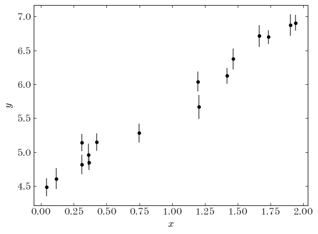
Now let’s forget that we did that: let’s pretend we don’t know the truth, but that we think the true values of the data are well-described by a linear model. We would like to measure the “best-fit” parameters of this model (for a straight line, the slope and intercept $(a,b)$) given the data above. In math, our model for the data $y$ is:
For a given set of parameters, $(a,b)$, we can evaluate our model $f(x \,;\, a, b)$ at a given $x$ location to compute the value of $y$ that we would expect in the absence of noise. For example, for the $n$th datum and for a given set of parameter values $(a,b)$:
We now want to search through all possible values of $a,b$ to find the “best” values, given the data, with some definition of “best.” When we say this word, we are implying that we want to optimize (find the maximum or minimum) of some objective function (a function that takes our data, our model, and returns a quantification of “best”, usually as a scalar). Numerically, this scalar objective function can be any function (though you probably want it to be convex) and you will see different choices in practice. You have some leeway in this choice depending on whether your goal is prediction, discovery, data compression, or discovery.
However, for inference—the typical use-case for us as scientists—you don’t have this freedom: one of the conclusions of this tutorial is going to be that you have no choice about what “best” means! Before we get there, though, let’s explore what seem like reasonable choices.
Here are a few desirable features we’d like any objective function to have:
To meet these three criteria, whatever objective function we choose should operate on the (dimensionless) quantities:
i.e. the difference between our predicted values $\tilde{y}$ and the observed $y$ values, weighted by the inverse uncertainties $\sigma$. The uncertainties have the same units as the data, so this is a dimensionless quantity. It also has the nice property that, as we wanted, points with large uncertainties are downweighted relative to points with small uncertainties. Here are some ideas for objective functions based on this scalar:
Weighted absolute deviation: the sum of the absolute values
$\sum_n^N \, \left|\chi_n\right|$
Weighted squared deviation: the sum of the squares
$\sum_n^N \, \chi_n^2$
Weighted absolute deviation to some power $p$:
$\sum_n^N \, \left|\chi_n\right|^p $
(Note: don’t show this to statisticians or they will get me fired. To a statistician, $\chi^2$ is a distribution not a statistic…but astronomers seem to use this terminology.)
For simplicity, let’s just compare two of these: the absolute deviation and the squared deviation. Both of these functions are convex and so we can pass them in to a naive optimizer to find the best parameters. Let’s first implement the functions, and then pass them in to the default scipy.optimize function minimizer.
Implement the functions to compute the weighted absolute and squared deviations below
def line_model(pars, x):
"""
Evaluate a straight line model at the input x values.
Parameters
----------
pars : list, array
This should be a length-2 array or list containing the
parameter values (a, b) for the (slope, intercept).
x : numeric, list, array
The coordinate values.
Returns
-------
y : array
The computed y values at each input x.
"""
return pars[0] * np.array(x) + pars[1]
def weighted_absolute_deviation(pars, x, y, y_err):
"""
Compute the weighted absolute deviation between the data
(x, y, y_err) and the model points computed with the input
parameters (pars).
"""
chi = (y - line_model(pars, x)) / y_err
return np.sum(np.abs(chi))
def weighted_squared_deviation(pars, x, y, y_err):
"""
Compute the weighted squared deviation between the data
(x, y, y_err) and the model points computed with the input
parameters (pars).
"""
chi = (y - line_model(pars, x)) / y_err
return np.sum(chi**2)
We can demonstrate that these are convex (over some domain) by computing the objective function values over a grid of parameter values (a grid in $a, b$):
# make a 256x256 grid of parameter values centered on the true values
a_grid = np.linspace(a_true - 2.0, a_true + 2, 256)
b_grid = np.linspace(b_true - 2.0, b_true + 2, 256)
a_grid, b_grid = np.meshgrid(a_grid, b_grid)
ab_grid = np.vstack((a_grid.ravel(), b_grid.ravel())).T
fig, axes = plt.subplots(1, 2, figsize=(9, 5.1), sharex=True, sharey=True)
for i, func in enumerate([weighted_absolute_deviation, weighted_squared_deviation]):
func_vals = np.zeros(ab_grid.shape[0])
for j, pars in enumerate(ab_grid):
func_vals[j] = func(pars, x, y, y_err)
axes[i].pcolormesh(
a_grid,
b_grid,
func_vals.reshape(a_grid.shape),
cmap="Blues",
vmin=func_vals.min(),
vmax=func_vals.min() + 256,
) # arbitrary scale
axes[i].set_xlabel("$a$")
# plot the truth
axes[i].plot(a_true, b_true, marker="o", zorder=10, color="tab:red")
axes[i].axis("tight")
axes[i].set_title(func.__name__, fontsize=14)
axes[0].set_ylabel("$b$")
fig.tight_layout()
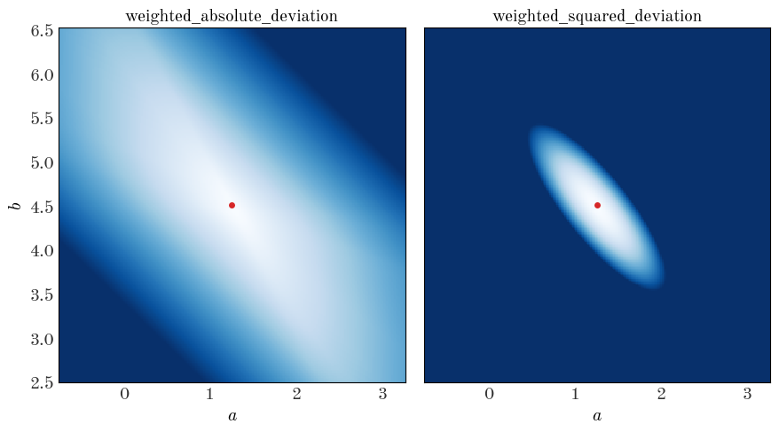
There are minima in both cases near the true values of the parameters (good), but the gradient of the function is clearly different (the color scales are the same in each panel above). Let’s see what happens when we minimize these objective functions to get the best-fit parameter values:
x0 = [1.0, 1.0] # starting guess for the optimizer
result_abs = minimize(
weighted_absolute_deviation,
x0=x0,
args=(x, y, y_err), # passed to the weighted_*_deviation function after pars
method="BFGS",
) # similar to Newton's method
result_sq = minimize(
weighted_squared_deviation,
x0=x0,
args=(x, y, y_err), # passed to the weighted_*_deviation function after pars
method="BFGS",
)
best_pars_abs = result_abs.x
best_pars_sq = result_sq.x
Let’s now plot our two best-fit lines over the data:
plt.errorbar(x, y, y_err, linestyle="none", marker="o", ecolor="#666666")
x_grid = np.linspace(x.min() - 0.1, x.max() + 0.1, 128)
plt.plot(
x_grid,
line_model(best_pars_abs, x_grid),
marker="",
linestyle="-",
label="absolute deviation",
)
plt.plot(
x_grid,
line_model(best_pars_sq, x_grid),
marker="",
linestyle="-",
label="squared deviation",
)
plt.xlabel("$x$")
plt.ylabel("$y$")
plt.legend(loc="best")
plt.tight_layout()
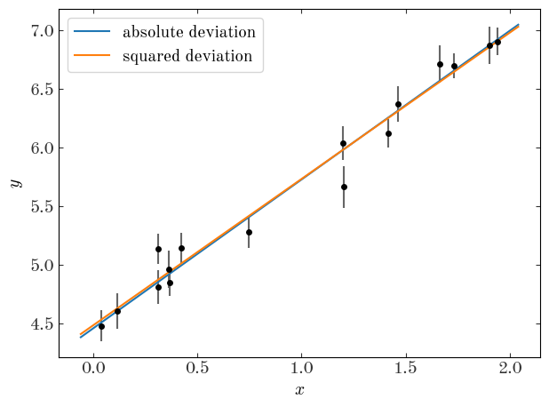
Well, by eye they both look reasonable! Are we done?! Not quite – how do we choose between the two?!
In order to pick between these two, or any of the arbitrary objective functions we could have chosen, we have to justify using one function over the others. In what follows, we’ll justify optimizing the sum of the squared deviations (so-called “least-squares fitting”) by thinking about the problem probabilistically, rather than procedurally.
Let’s review the assumptions we made above in generating our data:
$y$ cause deviations between the data and predictions$x$ data are known perfectly, or at least their uncertainties are far smaller than the uncertainties in $y$First off, these assumptions tell us that for each datum $(x_n, y_n)$ there is some true $y_{n,{\rm true}}$, and because of limitations in our observing process we can’t observe the truth, but we know that the values we do observe will be Gaussian (Normal) distributed around the true value. (Note: This assumption tends to be a good or at least a conservative approximation in practice, but there are certainly more complex situations when, e.g., you have asymmetric uncertainties, or error distributions with large tails!). In math:
This is the likelihood of observing a particular $y$ given the true $y_{\rm true}$. Note that in our model, all of the $y_{\rm true}$’s must lie on a line. It is also interesting that the argument of the normal distribution looks a lot like $\chi^2$!
What about considering two data points, $y_1$ and $y_2$? Now we need to write down the joint probability
But, note that in assumption 3 above, we are assuming the data are independent. In that case, the random error in one point does not affect the random error in any other point, so the joint probability can be turned into a product:
This is the full expression for the likelihood of the observed data given the true $y$ values. Recall that these true values, according to our assumptions, must lie on a line with some parameters, and we’re trying to infer those parameters! We can compute a particular $y_{n,{\rm true}}$ using $x_n$ and a given set of model parameters $a, b$. With that in mind, we can write the likelihood instead as:
So what are the “best” values of the parameters $a, b$? They are the ones that maximize this likelihood!
The product on the right of the likelihood is a product over exponentials (well, Gaussians), which can be annoying to deal with. But, maximizing the likelihood is equivalent to maximizing the log-likelihood – so we can get rid of the product and all of those exponentials by taking the log of both sides:
In this case, the uncertainties are known and constant, so to maximize this expression we only care that (abbreviating the likelihood as $\mathcal{L}$):
Apparently, minimizing the sum of the weighted squared deviations is equivalent to maximizing the (log) likelihood derived from thinking about the probability of the data! Above, we did that minimization numerically using an iterative solver. That’s fine, but (a) it doesn’t directly give us the uncertainties on the inferred model parameters, and (b) there is actually an analytic way to solve this problem using linear algebra that is generally much faster!
Using linear algebra, we can simplify and generalize a lot of the expressions above. In what follows, all vectors are column vectors and are represented by lower-case bold symbols. Matrices are upper-case bold symbols.
We’ll start by writing our model as a matrix equation. To do that, we need a way to, for a given set of parameters, compute the set of predicted $y$’s. This is done by defining the parameter vector, $\boldsymbol{\theta}$, and a matrix typically called the design matrix, $\boldsymbol{X}$:
(note the order of the parameters!). With these definitions, the vector of predicted $y$ values is just
so the deviation vector between the prediction and the data is just $(\boldsymbol{y}-\boldsymbol{X} \, \boldsymbol{\theta})$ where
But how do we include the uncertainties? We’ll pack the list of uncertainties (variances) into the trace of a 2D, $N \times N$ matrix called the covariance matrix. Because we are assuming the uncertainties are independent, the off-diagonal terms are all zero:
With these matrices, we can write the expression for $\chi^2$ (and therefore the log-likelihood) very concisely:
In this form, the terms in the $\chi^2$ have a nice geometric interpretation: This looks like a distance between the data and the model computed with the metric $\boldsymbol{\Sigma}$.
If you solve for the optimum of the log-likelihood function (take the derivative with respect to $\boldsymbol{\theta}$ and set equal to 0), you find that:
Getting the best-fit parameters just requires a few simple linear algebra operations! As an added bonus, we also get the uncertainties on the parameters. The $2\times2$ covariance matrix for the best-fit parameters is given by the matrix:
Instead of using an iterative optimizer like scipy.optimize.minimize, let’s just write out the linear algebra explicitly and use numpy.linalg to solve this for us!
Implement the necessary linear algebra to solve for the best-fit parameters and the parameter covariance matrix, defined above.
# create matrices and vectors:
# learn this is a magical function - it makes exactly what we want for the design matrix
X = np.vander(x, N=2, increasing=True)
# you never want to do this in practice because the matrix will just be full of zeros!
# that's a good way to waste all of your RAM on storing zeros...
Cov = np.diag(y_err**2)
Cinv = np.linalg.inv(Cov) # we need the inverse covariance matrix
X.shape, Cov.shape, y.shape
((16, 2), (16, 16), (16,))
# using the new Python matrix operator
best_pars_linalg = np.linalg.inv(X.T @ Cinv @ X) @ (X.T @ Cinv @ y)
# we can also get the parameter covariance matrix
pars_Cov = np.linalg.inv(X.T @ Cinv @ X)
Let’s see how the parameter values compare to what we found using the numerical optimizer (we reversed the order for the linear algebra so we use [::-1] to reverse the array):
best_pars_sq - best_pars_linalg[::-1]
array([-1.13359355e-08, 3.98420585e-09])
They are almost identical! That’s good. Now let’s look at the covariance matrix of the parameters (the uncertainty in the parameters) and plot the 1 and 2-sigma error ellipses:
# some tricks to get info we need to plot an ellipse, aligned with
# the eigenvectors of the covariance matrix
eigval, eigvec = np.linalg.eig(pars_Cov)
angle = np.degrees(np.arctan2(eigvec[1, 0], eigvec[0, 0]))
w, h = 2 * np.sqrt(eigval)
from matplotlib.patches import Ellipse
fig, ax = plt.subplots(1, 1, figsize=(5, 5))
for n in [1, 2]:
ax.add_patch(
Ellipse(
best_pars_linalg,
width=n * w,
height=n * h,
angle=angle,
fill=False,
linewidth=3 - n,
edgecolor="#555555",
label=r"{}$\sigma$".format(n),
)
)
ax.plot(
b_true,
a_true,
marker="o",
zorder=10,
linestyle="none",
color="#de2d26",
label="truth",
)
ax.set_xlabel("$b$")
ax.set_ylabel("$a$")
ax.legend(loc="best")
fig.tight_layout()
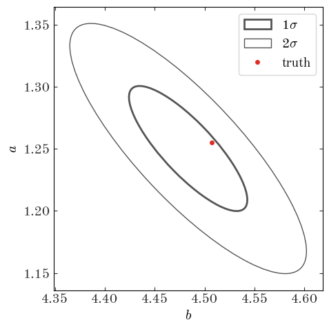
Let’s review what we did so far. We found that standard weighted least squares fitting is a justified approach to estimating the best-fit parameters because it optimizes the likelihood of the data under the assumptions of our model; it optimizes a justified scalar objective function. We then fit our straight-line model to the data using and got back a point-estimate of the best parameters along with a covariance matrix describing the uncertainties in the parameters. This is the way of the frequentist. What we’re going to do now is see what happens if we switch to a Bayesian methodology instead. While the two methods end up looking mathematically identical, there are fundamental philosophical differences that can lead to very different interpretations and implementations when models are more complex than the toy example we use above.
As Bayesians, we aren’t interested in a point-estimate of the best parameters, but rather we’re interested in the inferred distribution of possible parameter values (the posterior probability distribution function over parameters). So how do we write down or solve for this posterior pdf? Before we get to that, let’s take a look at a fundamental equation of Bayesian statistics, Bayes’ theorem, which we’ll derive using the joint probability of $A$ and $B$ which are conditional on some other information $I$ that, right now, we don’t care about. For example, $A$ could be the time it takes to get from here to NYC, $B$ could be the amount of traffic on the road, and $I$ could include the information that we’re driving a car and not walking. Bayes’ theorem as expressed below is not controversial – Bayesians and Frequentists agree that this is just how joint and conditional probabilities work. We start by writing down the joint probability of $A$ and $B$, then factor it in two ways into conditional proabilities:
Now we look at the right two expressions, and divide by one of the marginal probabilities to get:
Ok, so that’s all fine. Now let’s replace $A$ and $B$ with variables that represent, from our example above, our data $D=(\{x_n\},\{y_n\},\{\sigma_n\})$ and our model parameters $\boldsymbol{\theta}$:
In just switching the meaning of the variables, this expression becomes controversial! Frequentists would object to the above for two main reasons:
$p(\boldsymbol{\theta}\,|\,D, I)$. This is something that a frequentist would say cannot exist - there is only one true vector of parameters that we are trying to learn, not a distribution!The differences above result from the fact that probability means something different to Frequentists and Bayesians. Bayesians think of probability as representing a degree of belief about something, whereas a frequentist thinks of a probability as related to limiting frequencies of occurrence in repeated trials or observations. This is a rich topic and I highly recommend reading this series of blogposts by Jake Vanderplas to learn more. For now, let’s put on Bayesian hats and take a look at the implications of the expression above.
(It’s good to rememeber that we’re all friends. The differences are based on philosophy and so can lead to some heated discussions and debates, but remember we’re all trying to do science – we’re on the same team!)
Let’s decompose Bayes’ theorem (as applied to modeling and inference). The four terms in Bayes’ theorem above have names that are good to be familiar with:
$p(\boldsymbol{\theta}\,|\,D, I)$ - posterior probability:
This is the thing we are after when we do Bayesian inference or model fitting. We want to know what the distribution of possible parameter values is, given the data we observe and any prior information or assumptions $I$.
$p(D\,|\,\boldsymbol{\theta}, I)$ - likelihood:
This is the likelihood of the data given a particular set of model parameters. We’ve already seen this object and used it above to find the best-fit model parameters by maximizing this function. In a Bayesian context, it can also be thought of as a distribution – it’s a distribution that generates new datasets given a model instance. For that reason, we typically refer to models that produce a likelihood as generative models because they specify how to generate new data sets that look like the one you observe. As we saw above when we wrote the likelihood function for a straight line model and data with Gaussian errors, the likelihood usually contains a component that can be interpreted as the noise model.
$p(\boldsymbol{\theta} \,|\, I)$ - prior probability
This contains any relevant information about our parameters that we know before observing the data. This can include physical constraints, previous measurements, or anything, really. This flexibility is what makes the prior a somewhat controversial object. In practice, the prior only really matters if it is much narrower than the likelihood function. If the prior is broad with respect to the likelihood, the information in the likelihood makes the prior almost irrelevant. However, there are several subtleties to choosing priors that need to be considered. As an example, one subtlety comes from the choice of coordinates for the model parameters: a prior that is broad and flat in a parameter $\alpha$ won’t be broad and flat if you change variables to $\beta = \alpha^2$.
$p(D\,|\, I)$ - evidence or fully marginalized likelihood (FML)
In many cases the evidence is simply a normalization constant and, for some of the most relevant algorithms used in inference, can be ignored. This term involves an integral over all of parameter space that can be very difficult to compute:
If you need to do Bayesian model selection (e.g., decide between models with different parameters), you unfortunately need to compute this quantity. But if you only think you need the FML, beware!
So how do we make use of all of this, in practice?
Let’s return to our example of fitting a line to data with the same data as above. In some sense, we are almost done once we write down an expression for the posterior pdf. If we ignore the FML, this amounts to multiplying a likelihood by a prior pdf. Well, we’ve already done the most important part: we already wrote down the likelihood function! This is often the hardest part and what we spend the most time doing as scientists (well, assuming you’re not building the instrument to observe the data!). We now need to define a prior pdf over the model parameters. Here we have some flexibility. Two possibilities you can always consider:
For simplicity, we’re going to assume a flat prior over both slope and intercept. Note that for this problem, this is not an uninformative prior. For now, we’ll assume that the data are informative enough that the small bias we introduce by using this prior is negligible. Let’s now define the functions we’ll need, and recall that
Implement the log-prior method (ln_prior) on the model class below.
class StraightLineModel(object):
def __init__(self, x, y, y_err):
"""
We store the data as attributes of the object so we don't have to
keep passing it in to the methods that compute the probabilities.
"""
self.x = np.asarray(x)
self.y = np.asarray(y)
self.y_err = np.asarray(y_err)
def ln_likelihood(self, pars):
"""
We don't need to pass in the data because we can access it from the
attributes. This is basically the same as the weighted squared
deviation function, but includes the constant normalizations for the
Gaussian likelihood.
"""
N = len(self.y)
dy = self.y - line_model(pars, self.x)
ivar = 1 / self.y_err**2 # inverse-variance
return -0.5 * (
N * np.log(2 * np.pi)
+ np.sum(2 * np.log(self.y_err))
+ np.sum(dy**2 * ivar)
)
def ln_prior(self, pars):
"""
The prior only depends on the parameters, so we don't need to touch
the data at all. We're going to implement a flat (uniform) prior
over the ranges:
a : [0, 100]
b : [-50, 50]
"""
a, b = pars # unpack parameters
ln_prior_val = 0.0 # we'll add to this
if a < 0 or a > 100.0:
return -np.inf
else:
ln_prior_val += np.log(1e-2) # normalization, log(1/100)
if b < -50 or b > 50.0:
return -np.inf
else:
ln_prior_val += np.log(1e-2) # normalization, log(1/100)
return ln_prior_val
def ln_posterior(self, pars):
"""
Up to a normalization constant, the log of the posterior pdf is just
the sum of the log likelihood plus the log prior.
"""
lnp = self.ln_prior(pars)
if np.isinf(
lnp
): # short-circuit if the prior is infinite (don't bother computing likelihood)
return lnp
lnL = self.ln_likelihood(pars)
lnprob = lnp + lnL
if np.isnan(lnprob):
return -np.inf
return lnprob
def __call__(self, pars):
return self.ln_posterior(pars)
model = StraightLineModel(x, y, y_err)
Now we’ll repeat what we did above to map out the value of the log-posterior over a 2D grid of parameter values. Because we used a flat prior, you’ll notice it looks identical to the visualization of the weighted_squared_deviation – only the likelihood has any slope to it!
def evaluate_on_grid(func, a_grid, b_grid, args=()):
a_grid, b_grid = np.meshgrid(a_grid, b_grid)
ab_grid = np.vstack((a_grid.ravel(), b_grid.ravel())).T
func_vals = np.zeros(ab_grid.shape[0])
for j, pars in enumerate(ab_grid):
func_vals[j] = func(pars, *args)
return func_vals.reshape(a_grid.shape)
fig, axes = plt.subplots(1, 3, figsize=(14, 5.1), sharex=True, sharey=True)
# make a 256x256 grid of parameter values centered on the true values
a_grid = np.linspace(a_true - 5.0, a_true + 5, 256)
b_grid = np.linspace(b_true - 5.0, b_true + 5, 256)
ln_prior_vals = evaluate_on_grid(model.ln_prior, a_grid, b_grid)
ln_like_vals = evaluate_on_grid(model.ln_likelihood, a_grid, b_grid)
ln_post_vals = evaluate_on_grid(model.ln_posterior, a_grid, b_grid)
for i, vals in enumerate([ln_prior_vals, ln_like_vals, ln_post_vals]):
axes[i].pcolormesh(
a_grid, b_grid, vals, cmap="Blues", vmin=vals.max() - 1024, vmax=vals.max()
) # arbitrary scale
axes[0].set_title("log-prior", fontsize=20)
axes[1].set_title("log-likelihood", fontsize=20)
axes[2].set_title("log-posterior", fontsize=20)
for ax in axes:
ax.set_xlabel("$a$")
# plot the truth
ax.plot(a_true, b_true, marker="o", zorder=10, color="#de2d26")
ax.axis("tight")
axes[0].set_ylabel("$b$")
fig.tight_layout()
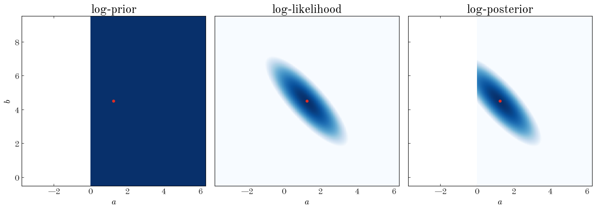
Subclass the StraightLineModel class and implement a new prior. Replace the flat prior above with an uncorrelated 2D Gaussian centered on $(\mu_a,\mu_b) = (3., 5.5)$ with root-variances $(\sigma_a,\sigma_b) = (0.05, 0.05)$. Compare the 2D grid plot with the flat prior to the one with a Gaussian prior
class StraightLineModelGaussianPrior(
StraightLineModel
): # verbose names are a good thing!
def ln_prior(self, pars):
a, b = pars # unpack parameters
ln_prior_val = 0.0 # we'll add to this
# prior on a is a Gaussian with mean, stddev = (3, 0.05)
ln_prior_val += (
-0.5 * (a - 3.0) ** 2 / 0.05**2
) # this is not normalized properly, but that's ok
# prior on b is a Gaussian with mean, stddev = (5.5, 0.05)
ln_prior_val += (
-0.5 * (b - 5.5) ** 2 / 0.05**2
) # this is not normalized properly, but that's ok
return ln_prior_val
model_Gprior = StraightLineModelGaussianPrior(x, y, y_err)
fig, axes = plt.subplots(1, 3, figsize=(14, 5.1), sharex=True, sharey=True)
ln_prior_vals2 = evaluate_on_grid(model_Gprior.ln_prior, a_grid, b_grid)
ln_like_vals2 = evaluate_on_grid(model_Gprior.ln_likelihood, a_grid, b_grid)
ln_post_vals2 = evaluate_on_grid(model_Gprior.ln_posterior, a_grid, b_grid)
for i, vals in enumerate([ln_prior_vals2, ln_like_vals2, ln_post_vals2]):
axes[i].pcolormesh(
a_grid, b_grid, vals, cmap="Blues", vmin=vals.max() - 1024, vmax=vals.max()
) # arbitrary scale
axes[0].set_title("log-prior", fontsize=20)
axes[1].set_title("log-likelihood", fontsize=20)
axes[2].set_title("log-posterior", fontsize=20)
for ax in axes:
ax.set_xlabel("$a$")
# plot the truth
ax.plot(a_true, b_true, marker="o", zorder=10, color="#de2d26")
ax.axis("tight")
axes[0].set_ylabel("$b$")
fig.tight_layout()
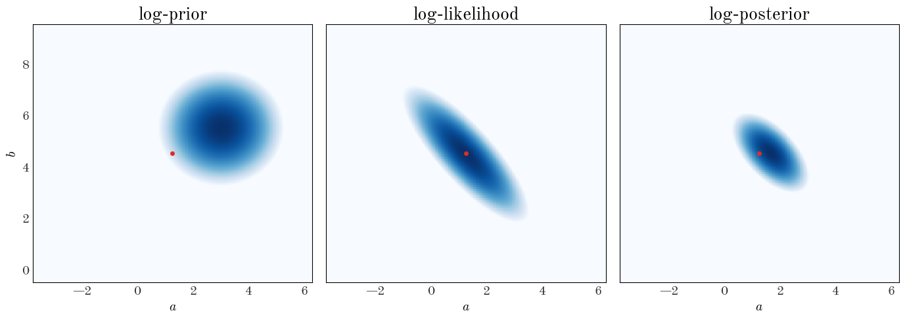
Now what do we do? The answer depends a bit on your intentions. If you’d like to propagate the posterior pdf (as in, pass on to other scientists to use your results), what do you do if the posterior pdf isn’t analytic? And what numbers do you put in your abstract? One option is to draw samples from your posterior pdf and compute summary statistics (e.g., median and quantils) using the samples. That’s the approach we’re going to take.
One of the most common and powerful class of methods people use for generating these samples is Markov Chain Monte Carlo (MCMC), but there are other options (e.g., brute-force or monte carlo rejection sampling). MCMC methods are useful because they scale reasonably to higher dimensions (well, at least better than brute-force). A disadvantage to these methods comes from the “Markov Chain” part of the name: there is always some correlation between nearby steps in a chain of samples, so you have to compute second-order statistics on the samples to try to verify whether your samples are truly random or fair samples from the target distribution (your posterior pdf).
The simplest MCMC algorithm is known as Metropolis-Hastings. I’m not going to explain it in detail, but in pseudocode, it is:
$\theta_0$ with posterior probability $\pi_0$$N_{\rm steps}$:
$\delta\theta_0$ from some proposal distribution$\theta_{\rm new} = \theta_0 + \delta\theta_0$$\pi_{\rm new}$$r \sim \mathcal{U}(0,1)$$\pi_{\rm new}/\pi_0 > 1$ or $\pi_{\rm new}/\pi_0 > r$:
$\theta_{\rm new}$$\theta_0,\pi_0$ with $\theta_{\rm new},\pi_{\rm new}$$\theta_0$ againThe proposal distribution has to be chosen and tuned by hand. We’ll use a spherical / uncorrelated Gaussian distribution with root-variances set by hand:
def sample_proposal(*sigmas):
return np.random.normal(0.0, sigmas)
def run_metropolis_hastings(p0, n_steps, model, proposal_sigmas):
"""
Run a Metropolis-Hastings MCMC sampler to generate samples from the input
log-posterior function, starting from some initial parameter vector.
Parameters
----------
p0 : iterable
Initial parameter vector.
n_steps : int
Number of steps to run the sampler for.
model : StraightLineModel instance (or subclass)
A callable object that takes a parameter vector and computes
the log of the posterior pdf.
proposal_sigmas : list, array
A list of standard-deviations passed to the sample_proposal
function. These are like step sizes in each of the parameters.
"""
p0 = np.array(p0)
if len(proposal_sigmas) != len(p0):
raise ValueError(
"Proposal distribution should have same shape as parameter vector."
)
# the objects we'll fill and return:
chain = np.zeros((n_steps, len(p0))) # parameter values at each step
ln_probs = np.zeros(n_steps) # log-probability values at each step
# we'll keep track of how many steps we accept to compute the acceptance fraction
n_accept = 0
# evaluate the log-posterior at the initial position and store starting position in chain
ln_probs[0] = model(p0)
chain[0] = p0
# loop through the number of steps requested and run MCMC
for i in range(1, n_steps):
# proposed new parameters
step = sample_proposal(*proposal_sigmas)
new_p = chain[i - 1] + step
# compute log-posterior at new parameter values
new_ln_prob = model(new_p)
# log of the ratio of the new log-posterior to the previous log-posterior value
ln_prob_ratio = new_ln_prob - ln_probs[i - 1]
if (ln_prob_ratio > 0) or (ln_prob_ratio > np.log(np.random.uniform())):
chain[i] = new_p
ln_probs[i] = new_ln_prob
n_accept += 1
else:
chain[i] = chain[i - 1]
ln_probs[i] = ln_probs[i - 1]
acc_frac = n_accept / n_steps
return chain, ln_probs, acc_frac
Now we’ll run the sampler! Let’s start from some arbitrary position allowed by our prior.
Choose a starting position, values for a and b to start the MCMC from. In general, a good way to do this is to sample from the prior pdf. Generate values for a and b by sampling from a uniform distribution over the domain we defined above. Then, run the MCMC sampler from this initial position for 8192 steps. Play around with (“tune” as they say) the proposal_sigmas until you get an acceptance fraction around ~40%.
p0 = [6.0, 6.0]
chain, _, acc_frac = run_metropolis_hastings(
p0, n_steps=8192, model=model, proposal_sigmas=[0.05, 0.05]
)
print("Acceptance fraction: {:.1%}".format(acc_frac))
Acceptance fraction: 42.8%
Let’s look at the chain returned, the parameter value positions throughout the sampler run:
fig, ax = plt.subplots(1, 1, figsize=(5, 5))
ax.pcolormesh(
a_grid,
b_grid,
ln_post_vals,
cmap="Blues",
vmin=ln_post_vals.max() - 128,
vmax=ln_post_vals.max(),
) # arbitrary scale
ax.axis("tight")
fig.tight_layout()
ax.plot(a_true, b_true, marker="o", zorder=10, color="#de2d26")
ax.plot(chain[:512, 0], chain[:512, 1], marker="", color="k", linewidth=1.0)
ax.set_xlabel("$a$")
ax.set_ylabel("$b$")
Text(40.83333333333333, 0.5, '$b$')
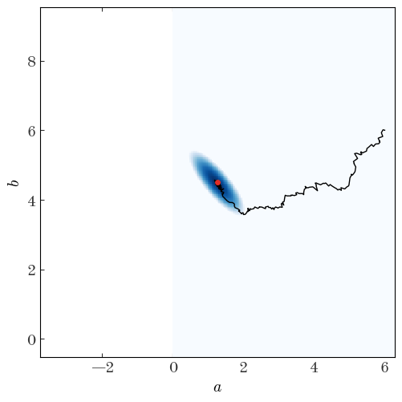
We can also look at the individual parameter traces, i.e. the 1D functions of parameter value vs. step number for each parameter separately:
fig, axes = plt.subplots(len(p0), 1, figsize=(5, 7), sharex=True)
for i in range(len(p0)):
axes[i].plot(chain[:, i], marker="", drawstyle="steps")
axes[0].axhline(a_true, color="r", label="true")
axes[0].legend(loc="best")
axes[0].set_ylabel("$a$")
axes[1].axhline(b_true, color="r")
axes[1].set_ylabel("$b$")
fig.tight_layout()
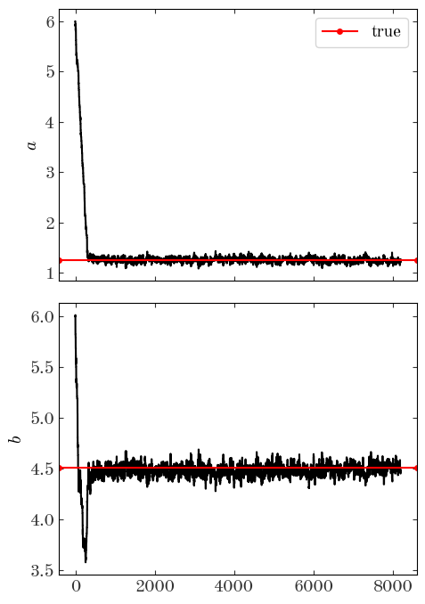
From these trace plots, we can see by eye that it takes the sampler about a few hundred steps to converge. When we look at the samples returned or when we compute our summary statistics, we don’t want to include these parameter values! In addition, there is likely some correlation between nearby steps. We can attempt to remove some of the correlated steps by thinning the chain, i.e. by downsampling. We can do both simultaneously using Python indexing tricks. Certainly by step 2000 the chains look converged, so from there on we’ll keep only every 8th step:
good_samples = chain[2000::8]
good_samples.shape
(774, 2)
We’re left with 774 samples; we hope these are approximately uncorrelated, converged samples from the posterior pdf (there are other ways we can check, but these are out of scope for this workshop). Now you have to choose what summary statistics to report. You have some options, but a reasonable choice is to report the median, 16th, and 84th percentiles:
low, med, hi = np.percentile(good_samples, [16, 50, 84], axis=0)
upper, lower = hi - med, med - low
disp_str = ""
for i, name in enumerate(["a", "b"]):
fmt_str = "{name}={val:.2f}^{{+{plus:.2f}}}_{{-{minus:.2f}}}"
disp_str += fmt_str.format(name=name, val=med[i], plus=upper[i], minus=lower[i])
disp_str += r"\quad "
disp_str = "${}$".format(disp_str)
display.Latex(data=disp_str)
$a=1.25^{+0.05}{-0.05}\quad b=4.48^{+0.06}{-0.05}\quad $
Recall that the true values are:
a_true, b_true
(1.255, 4.507)
We’ve now done this problem the Bayesian way as well! Now, instead of drawing the “best-fit” line over the data, we can take a handful of samples and plot a line for each of the samples, as a way to visualize the uncertainty we have in the model parameters:
plt.figure(figsize=(6, 5))
plt.errorbar(x, y, y_err, linestyle="none", marker="o", ecolor="#666666")
x_grid = np.linspace(x.min() - 0.1, x.max() + 0.1, 128)
for pars in good_samples[:128]: # only plot 128 samples
plt.plot(
x_grid,
line_model(pars, x_grid),
marker="",
linestyle="-",
color="#3182bd",
alpha=0.1,
zorder=-10,
)
plt.xlabel("$x$")
plt.ylabel("$y$")
plt.tight_layout()
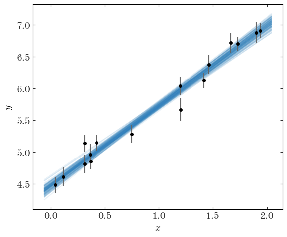
Or, we can plot the samples using a corner plot to visualize the structure of the 2D and 1D (marginal) posteriors:
# uncomment and run this line if the import fails:
# !source activate statsseminar; pip install corner
import corner
fig = corner.corner(
chain[2000:], bins=32, labels=["$a$", "$b$"], truths=[a_true, b_true]
)
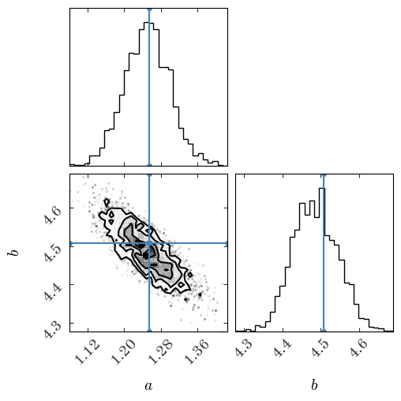
We made it! We’re now ready to do the problem we set out to do. In the initial model, we assumed that we knew the uncertainties in our measurements exactly and that the data were drawn from a one-dimensional line. We’re now going to relax that assumption and assume that either (a) the data uncertainties have been underestimated or (b) there is intrinsic scatter in the true model (in the absence of other information, these two ideas are degenerate). Let’s first generate some data. We’ll assume the latter of the two ideas, and we’ll further assume that the model line is convolved with an additional Gaussian in the $y$ direction, with the new parameter being the intrinsic width of the relation expressed as a variance $V$:
V_true = 0.5**2
n_data = 42
# we'll keep the same parameters for the line as we used above
x = rnd.uniform(0, 2.0, n_data)
x.sort() # sort the values in place
y = a_true * x + b_true
# Heteroscedastic Gaussian uncertainties only in y direction
y_err = rnd.uniform(
0.1, 0.2, size=n_data
) # randomly generate uncertainty for each datum
# add Gaussian intrinsic width
y = rnd.normal(
y, np.sqrt(y_err**2 + V_true)
) # re-sample y data with noise and intrinsic scatter
plt.errorbar(x, y, y_err, linestyle="none", marker="o", ecolor="#666666")
plt.xlabel("$x$")
plt.ylabel("$y$")
plt.tight_layout()
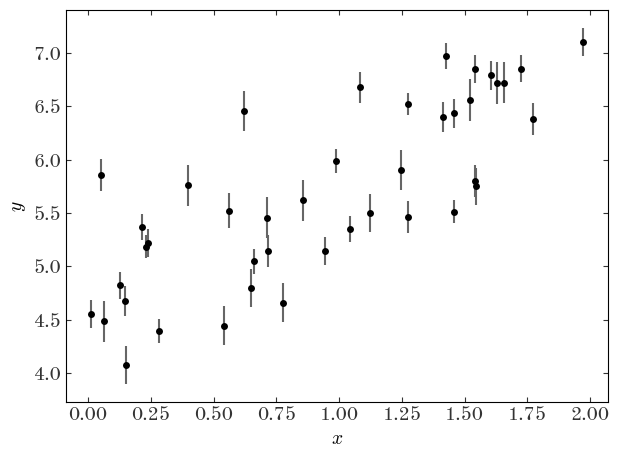
Let’s first naively fit the data assuming no intrinsic scatter using least-squares:
X = np.vander(x, N=2, increasing=True)
Cov = np.diag(y_err**2)
Cinv = np.linalg.inv(Cov)
best_pars = np.linalg.inv(X.T @ Cinv @ X) @ (X.T @ Cinv @ y)
pars_Cov = np.linalg.inv(X.T @ Cinv @ X)
plt.errorbar(x, y, y_err, linestyle="none", marker="o", ecolor="#666666")
x_grid = np.linspace(x.min() - 0.1, x.max() + 0.1, 128)
plt.plot(
x_grid,
line_model(best_pars[::-1], x_grid),
marker="",
linestyle="-",
label="best-fit line",
)
plt.plot(
x_grid,
line_model([a_true, b_true], x_grid),
marker="",
linestyle="-",
label="true line",
)
plt.xlabel("$x$")
plt.ylabel("$y$")
plt.legend(loc="best")
plt.tight_layout()
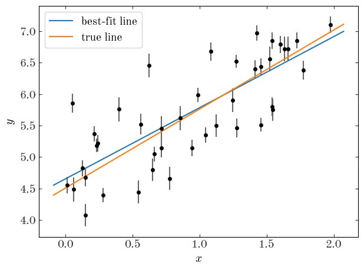
The covariance matrix for the parameters is:
pars_Cov
array([[ 0.00173349, -0.00133591],
[-0.00133591, 0.00143021]])
We clearly get a biased result and yet very precise measurements of the parameters when we don’t take in to account the intrinsic scatter. What we need to do now is modify out model to include the scatter as a free parameter. Unfortunately, it enters the model non-linearly so there is no solution using linear algebra or least-squares. Instead, we just write a new likelihood function and optimize it numerically. One choice we’ll make is to use the parameter $\ln{V}$ instead of $V$ for reasons I’ll explain later. To implement the new model, we’ll subclass our StraightLineModel class and define new likelihood and prior functions.
Subclass the StraightLineModel class and implement new prior and likelihood functions (ln_prior and ln_likelihood). The our model will now have 3 parameters: a, b, and lnV the log of the intrinsic scatter variance. Use flat priors on all of these parameters. In fact, we’ll be even lazier and forget the constant normalization terms: if a parameter vector is within the ranges below, return 0. (log(1.)) otherwise return -infinity:
class StraightLineIntrinsicScatterModel(StraightLineModel):
def ln_prior(self, pars):
"""The prior only depends on the parameters"""
a, b, lnV = pars
# flat priors on a, b, lnV
if a < -10 or a > 10 or b < -100.0 or b > 100.0 or lnV < -10.0 or lnV > 10.0:
return -np.inf
# this is only valid up to a numerical constant
return 0.0
def ln_likelihood(self, pars):
"""The likelihood function evaluation requires a particular set of model parameters and the data"""
a, b, lnV = pars
V = np.exp(lnV)
N = len(y)
dy = y - line_model([a, b], self.x)
ivar = 1 / (
self.y_err**2 + V
) # inverse-variance now includes intrinsic scatter
return -0.5 * (
N * np.log(2 * np.pi) - np.sum(np.log(ivar)) + np.sum(dy**2 * ivar)
)
scatter_model = StraightLineIntrinsicScatterModel(x, y, y_err)
x0 = [5.0, 5.0, 0.0] # starting guess for the optimizer
# we have to minimize the negative log-likelihood to maximize the likelihood
result_ml_scatter = minimize(
lambda *args: -scatter_model.ln_likelihood(*args), x0=x0, method="BFGS"
)
result_ml_scatter
fun: 31.309507831773043
hess_inv: array([[ 0.01842724, -0.01708872, -0.00015224],
[-0.01708872, 0.02191525, 0.00019405],
[-0.00015224, 0.00019405, 0.05771309]])
jac: array([2.38418579e-07, 1.19209290e-06, 4.76837158e-07])
message: 'Optimization terminated successfully.'
nfev: 108
nit: 17
njev: 27
status: 0
success: True
x: array([ 1.12344769, 4.63858875, -1.44568252])
plt.errorbar(x, y, y_err, linestyle="none", marker="o", ecolor="#666666")
x_grid = np.linspace(x.min() - 0.1, x.max() + 0.1, 128)
plt.plot(
x_grid,
line_model(result_ml_scatter.x[:2], x_grid),
marker="",
linestyle="-",
label="best-fit line",
)
plt.plot(
x_grid,
line_model([a_true, b_true], x_grid),
marker="",
linestyle="-",
label="true line",
)
plt.xlabel("$x$")
plt.ylabel("$y$")
plt.legend(loc="best")
plt.tight_layout()
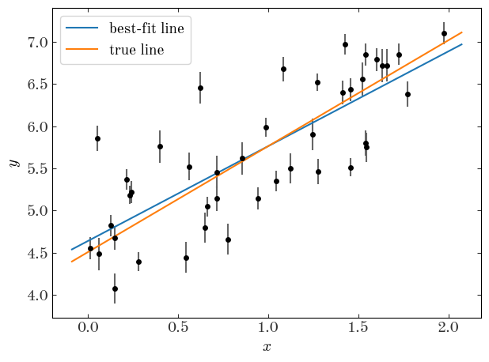
V_true, np.exp(result_ml_scatter.x[2])
(0.25, 0.23558523044282928)
It looks like the maximum likelihood estimate is a little bit better, and we get a reasonable measurement of the intrinsic scatter, but none of this gives us a handle on the uncertainty. How do we quantify the uncertainty in the now 3 parameters? We’ll just run MCMC.
To quantify our uncertainty in the parameters, we’ll run MCMC using the new model. Run MCMC for 65536 steps and visualize the resulting chain. Make sure the acceptance fraction is between ~25-50%.
p0 = [6.0, 6.0, -1.0]
chain, _, acc_frac = run_metropolis_hastings(
p0, n_steps=2**16, model=scatter_model, proposal_sigmas=[0.15, 0.15, 0.2]
)
acc_frac
0.3107147216796875
fig, axes = plt.subplots(len(p0), 1, figsize=(5, 7), sharex=True)
for i in range(len(p0)):
axes[i].plot(chain[:, i], marker="", drawstyle="steps")
axes[0].axhline(a_true, color="r", label="true")
axes[0].legend(loc="best")
axes[0].set_ylabel("$a$")
axes[1].axhline(b_true, color="r")
axes[1].set_ylabel("$b$")
axes[2].axhline(np.log(V_true), color="r")
axes[2].set_ylabel(r"$\ln V$")
fig.tight_layout()
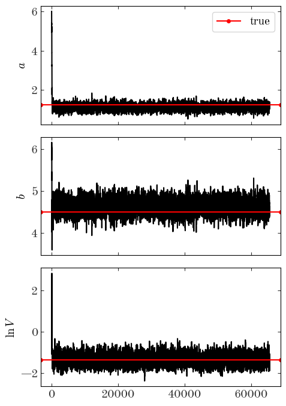
fig = corner.corner(
chain[2000:],
bins=32,
labels=["$a$", "$b$", r"$\ln V$"],
truths=[a_true, b_true, np.log(V_true)],
)
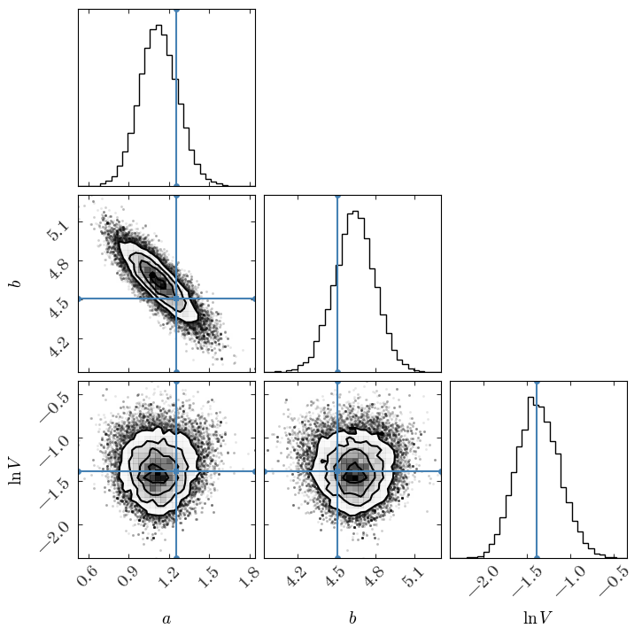
Now we’ll again compute the percentiles for the 1D, marginal distributions:
good_samples = chain[2000::8]
good_samples.shape
(7942, 3)
low, med, hi = np.percentile(good_samples, [16, 50, 84], axis=0)
upper, lower = hi - med, med - low
disp_str = ""
for i, name in enumerate(["a", "b", r"\ln V"]):
fmt_str = "{name}={val:.2f}^{{+{plus:.2f}}}_{{-{minus:.2f}}}"
disp_str += fmt_str.format(name=name, val=med[i], plus=upper[i], minus=lower[i])
disp_str += r"\quad "
disp_str = "${}$".format(disp_str)
display.Latex(data=disp_str)
$a=1.12^{+0.15}{-0.14}\quad b=4.64^{+0.15}{-0.16}\quad \ln V=-1.38^{+0.26}_{-0.24}\quad $
Compare this to the diagonal elements of the covariance matrix we got from ignoring the intrinsic scatter and doing least-squares fitting:
disp_str = ""
for i, name in zip([1, 0], ["a", "b"]):
fmt_str = r"{name}={val:.2f} \pm {err:.2f}"
disp_str += fmt_str.format(name=name, val=best_pars[i], err=np.sqrt(pars_Cov[i, i]))
disp_str += r"\quad "
disp_str = "${}$".format(disp_str)
display.Latex(data=disp_str)
$a=1.13 \pm 0.04\quad b=4.65 \pm 0.04\quad $
The parameter uncertainties estimated from the MCMC samples are much larger – this reflects our uncertainty about the intrinsic scatter of the points. Precision is highly model dependent.